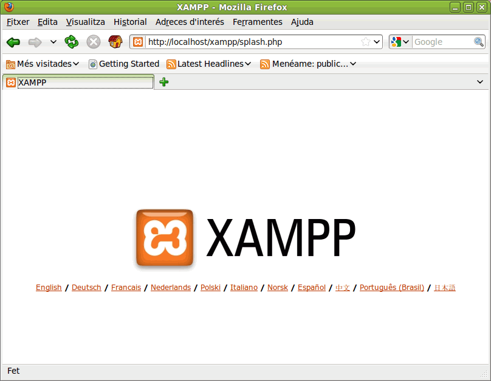
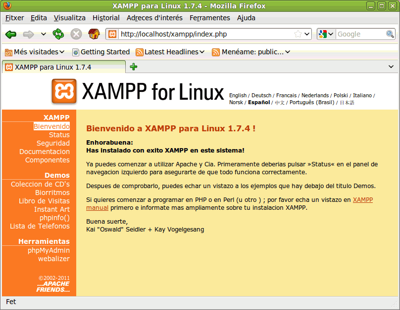

En esta página se explica la Instalación de XAMPP en GNU/Linux. Las capturas de pantalla están tomadas en la distribución LliureX 10.9 Desktop, pero en otras distribuciones el procedimiento es similar:
Nota: Antes de instalar un servidor de páginas web es conveniente comprobar si no hay ya uno instalado. Para ello, es suficiente con abrir el navegador y escribir la dirección http://localhost. Si no se obtiene un mensaje de error es que hay algún servidor de páginas web instalado.
La última versión de XAMPP disponible actualmente (abril de 2011) es la versión 1.7.4 (del 22 de enero de 2011), que incluye Apache 2.2.17, PHP 5.3.5, MySQL 5.5.8 y otras utilidades y la versión para GNU/Linux puede descargarse desde este enlace.
Una vez obtenido el archivo de instalación de XAMPP, el procedimiento de instalación es el siguiente:
cd /home/usuario/Baixades
sudo tar xvfz xampp-linux-1.7.4.tar.gz -C /opt
Al utilizar el comando sudo, nos pedirá la contraseña de administrador para continuar
Para inciar los servidores, hay que escribir la orden:
sudo /opt/lampp/lampp start
Para detener los servidores, hay que escribir la orden:
sudo /opt/lampp/lampp stop
Para detener y reiniciar los servidores, hay que escribir la orden:
sudo /opt/lampp/lampp restart
Para abrir el panel de control, hay que escribir la orden
sudo /opt/lampp/share/xampp-control-panel/xampp-control-panel
Para comprobar que todo funciona correctamente, hay que escribir en el navegador la dirección "http://localhost". Al abrir la página por primera vez, XAMPP pedirá seleccionar el idioma:

Una vez elegido el idioma, se mostrará la página de configuración de XAMPP:
